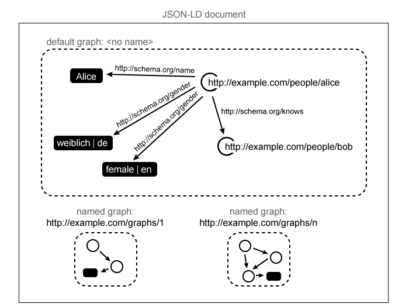

JSON is a useful data serialization and messaging format. This specification defines JSON-LD, a JSON-based format to serialize Linked Data. The syntax is designed to easily integrate into deployed systems that already use JSON, and provides a smooth upgrade path from JSON to JSON-LD. It is primarily intended to be a way to use Linked Data in Web-based programming environments, to build interoperable Web services, and to store Linked Data in JSON-based storage engines.
This document has been developed by the JSON for Linking Data W3C Community Group. The document has been transferred to the RDF Working Group for review, improvement, and publication along the Recommendation track. The specification has undergone significant development, review, and changes during the course of several years.
This editor's draft contains the following changes since the 16 January 2014 Recommendation:
There are several independent interoperable implementations of this specification, a test suite [[JSON-LD-TESTS]] and a live JSON-LD editor that is capable of demonstrating the features described in this document.
Linked Data [[LINKED-DATA]] is a way to create a network of standards-based machine interpretable data across different documents and Web sites. It allows an application to start at one piece of Linked Data, and follow embedded links to other pieces of Linked Data that are hosted on different sites across the Web.
JSON-LD is a lightweight syntax to serialize Linked Data in JSON [[!RFC4627]]. Its design allows existing JSON to be interpreted as Linked Data with minimal changes. JSON-LD is primarily intended to be a way to use Linked Data in Web-based programming environments, to build interoperable Web services, and to store Linked Data in JSON-based storage engines. Since JSON-LD is 100% compatible with JSON, the large number of JSON parsers and libraries available today can be reused. In addition to all the features JSON provides, JSON-LD introduces:
JSON-LD is designed to be usable directly as JSON, with no knowledge of RDF [[RDF11-CONCEPTS]]. It is also designed to be usable as RDF, if desired, for use with other Linked Data technologies like SPARQL. Developers who require any of the facilities listed above or need to serialize an RDF Graph or RDF Dataset in a JSON-based syntax will find JSON-LD of interest. People intending to use JSON-LD with RDF tools will find it can be used as another RDF syntax, like Turtle [[TURTLE]]. Complete details of how JSON-LD relates to RDF are in section .
The syntax is designed to not disturb already deployed systems running on JSON, but provide a smooth upgrade path from JSON to JSON-LD. Since the shape of such data varies wildly, JSON-LD features mechanisms to reshape documents into a deterministic structure which simplifies their processing.
This document is a detailed specification for a serialization of Linked Data in JSON. The document is primarily intended for the following audiences:
A companion document, the JSON-LD Processing Algorithms and API specification [[JSON-LD-API]], specifies how to work with JSON-LD at a higher level by providing a standard library interface for common JSON-LD operations.
To understand the basics in this specification you must first be familiar with JSON, which is detailed in [[!RFC4627]].
This document almost exclusively uses the term IRI (Internationalized Resource Indicator) when discussing hyperlinks. Many Web developers are more familiar with the URL (Uniform Resource Locator) terminology. The document also uses, albeit rarely, the URI (Uniform Resource Indicator) terminology. While these terms are often used interchangeably among technical communities, they do have important distinctions from one another and the specification goes to great lengths to try and use the proper terminology at all times.
JSON-LD satisfies the following design goals:
@context
and @id) to use the basic functionality in JSON-LD.This document uses the following terms as defined in JSON [[!RFC4627]]. Refer to the JSON Grammar section in [[!RFC4627]] for formal definitions.
@context where the value is @value, @list, or
@set is set to Generally speaking, the data model used for JSON-LD is a labeled,
directed
Developers who are familiar with Linked Data technologies will recognize the data model as the RDF Data Model. To dive deeper into how JSON-LD and RDF are related, see section .
JSON-LD specifies a number of syntax tokens and
@context@context keyword is described in detail in
.@id@value@language@type@container@list@set@reverse@index@base@vocab@type with a common prefix
@graph:All keys,
This specification describes the conformance criteria for JSON-LD documents. This criteria is relevant to authors and authoring tool implementers. As well as sections marked as non-normative, all authoring guidelines, diagrams, examples, and notes in this specification are non-normative. Everything else in this specification is normative.
A
The key words MUST, MUST NOT, REQUIRED, SHALL, SHALL NOT, SHOULD, SHOULD NOT, RECOMMENDED, NOT RECOMMENDED, MAY, and OPTIONAL in this specification have the meaning defined in [[!RFC2119]].
JSON [[RFC4627]] is a lightweight, language-independent data interchange format. It is easy to parse and easy to generate. However, it is difficult to integrate JSON from different sources as the data may contain keys that conflict with other data sources. Furthermore, JSON has no built-in support for hyperlinks, which are a fundamental building block on the Web. Let's start by looking at an example that we will be using for the rest of this section:
It's obvious to humans that the data is about a person whose
name is "Manu Sporny"
and that the homepage property contains the URL of that person's homepage.
A machine doesn't have such an intuitive understanding and sometimes,
even for humans, it is difficult to resolve ambiguities in such representations. This problem
can be solved by using unambiguous identifiers to denote the different concepts instead of
tokens such as "name", "homepage", etc.
Linked Data, and the Web in general, uses name and homepage, to expand to
Leveraging the popular schema.org vocabulary, the example above could be unambiguously expressed as follows:
In the example above, every property is unambiguously identified by an @id
When two people communicate with one another, the conversation takes place in a shared environment, typically called "the context of the conversation". This shared context allows the individuals to use shortcut terms, like the first name of a mutual friend, to communicate more quickly but without losing accuracy. A context in JSON-LD works in the same way. It allows two applications to use shortcut terms to communicate with one another more efficiently, but without losing accuracy.
Simply speaking, a
For the sample document in the previous section, a
As the
When a image and homepage, if they are
strings, are to be interpreted as
http://json-ld.org/contexts/person.jsonld,
it can be referenced by adding a single line and allows a JSON-LD document to
be expressed much more concisely as shown in the example below:
The referenced context not only specifies how the terms map to
homepage and image property
can be interpreted as an "@type": "@id",
see for more details). This information allows developers
to re-use each other's data without having to agree to how their data will interoperate
on a site-by-site basis. External JSON-LD context documents may contain extra
information located outside of the @context key, such as
documentation about the @context value
is ignored when the document is used as an external JSON-LD context document.
JSON documents can be interpreted as JSON-LD without having to be modified by
referencing a
In
This section only covers the most basic features of the JSON-LD Context. More advanced features related to the JSON-LD Context are covered in section .
A @id member:
Values that are interpreted as http://example.com/about/, the ../ would expand to http://example.com/ (for more
information on where
In the example above, the key http://schema.org/name
is interpreted as an
Term-to-IRI expansion occurs if the key matches a
JSON keys that do not expand to an status
in the example above, are not Linked Data and thus ignored when processed.
If type @context for
a particular
In the example above, since the value http://manu.sporny.org/
is expressed as a JSON
In summary,
@id or @type.@type key that is
set to a value of @id or @vocab.This section only covers the most basic features associated with IRIs in JSON-LD. More advanced features related to IRIs are covered in section .
To be able to externally reference
In JSON-LD, a @id
The example above contains a http://me.markus-lanthaler.com/.
This section only covers the most basic features associated with node identifiers in JSON-LD. More advanced features related to node identifiers are covered in section .
The type of a particular node can be specified using the @type
A node can be assigned more than one type by using an
The value of an @type key may also be a
This section only covers the most basic features associated with
types in JSON-LD. It is worth noting that the @type
@type
cannot be used in a
JSON-LD has a number of features that provide functionality above and beyond the core functionality described above. The following section describes this advanced functionality in more detail.
JSON-LD allows @base keyword.
For example, if a JSON-LD document was retrieved from http://example.com/document.jsonld,
relative IRIs would resolve against that IRI:
This document uses an empty @id, which resolves to the document base.
However, if the document is moved to a different location, the @base mapping, to overwrite the base IRI for the document.
Setting @base to
Please note that the @base will be ignored if used in
external contexts.
At times, all properties and types may come from the same vocabulary. JSON-LD's
@vocab keyword allows an author to set a common prefix to be used
for all properties and types that do not match a
If @vocab is used but certain keys in an
databaseId member would not expand to an
A :).
The foaf may be used as a short hand for the
Friend-of-a-Friend vocabulary, which is identified using the http://xmlns.com/foaf/0.1/. A developer may append
any of the FOAF vocabulary terms to the end of the prefix to specify a short-hand
version of the foaf:name would be expanded to the IRI
http://xmlns.com/foaf/0.1/name.
In the example above, foaf:name expands to the http://xmlns.com/foaf/0.1/name and foaf:Person expands
to http://xmlns.com/foaf/0.1/Person.
prefix:suffix
combination, the prefix matches a //). The http://example.com),
the value is interpreted as _), the value is interpreted as
It's also possible to use compact IRIs within the context as shown in the following example:
A value with an associated type, also known as a
@type @context section.The first example uses the @type keyword to associate a
type with a particular @context:
The modified key's value above is automatically type coerced to a
dateTime value because of the information specified in the
@context. A JSON-LD processor will interpret the example above
as follows:
| Subject | Property | Value | Value Type |
|---|---|---|---|
| http://example.com/docs/1 | http://purl.org/dc/terms/modified | 2010-05-29T14:17:39+02:00 | http://www.w3.org/2001/XMLSchema#dateTime |
The second example uses the expanded form of setting the type information in the body of a JSON-LD document:
Both examples above would generate the value
2010-05-29T14:17:39+02:00 with the type
http://www.w3.org/2001/XMLSchema#dateTime. Note that it is
also possible to use a
The @type
A
The first use of @type associates a http://schema.org/BlogPosting) with the @id @type associates a http://www.w3.org/2001/XMLSchema#dateTime) with the
value expressed using the @value @value and @type are used in
the same @type
@type
| Subject | Property | Value | Value Type |
|---|---|---|---|
| http://example.org/posts#TripToWestVirginia | http://www.w3.org/1999/02/22-rdf-syntax-ns#type | http://schema.org/BlogPosting | - |
| http://example.org/posts#TripToWestVirginia | http://purl.org/dc/terms/modified | 2010-05-29T14:17:39+02:00 | http://www.w3.org/2001/XMLSchema#dateTime |
JSON-LD supports the coercion of values to particular data types.
Type
Type coercion is specified within an @type key. The value of this key expands to an @id or @vocab may be used
as value to indicate that within the body of a JSON-LD document, a @id or @vocab is to be interpreted as an
@id and @vocab is how values are expanded
to @vocab first tries to expand the value
by interpreting it as @id in contrast are expanded as
@type key may be defined within the same context. This means that one may specify a
xsd and then use xsd:integer within the same
context definition.
The example below demonstrates how a JSON-LD author can coerce values to
The example shown above would generate the following data.
| Subject | Property | Value | Value Type |
|---|---|---|---|
| http://example.com/people#john | http://xmlns.com/foaf/0.1/name | John Smith | |
| http://example.com/people#john | http://xmlns.com/foaf/0.1/age | 41 | http://www.w3.org/2001/XMLSchema#integer |
| http://example.com/people#john | http://xmlns.com/foaf/0.1/homepage | http://personal.example.org/ | |
| http://work.example.com/jsmith/ |
Terms may also be defined using
In this case the @id definition in the term definition is optional.
If it does exist, the @id
key—regardless of whether a prefix is defined or not.
Type coercion is always performed using the unexpanded value of the key. In the
example above, that means that type coercion is done looking for foaf:age
in the http://xmlns.com/foaf/0.1/age.
Keys in the context are treated as dog and cat both expanded to http://example.com/vocab#animal.
Doing this could be useful for establishing different type coercion or language specification rules. It also allows a http://example.org/zoo should expand to
http://example.org/river, but this usage is discouraged because it would lead to a
great deal of confusion among developers attempting to understand the JSON-LD document.
The example shows two nodes related by a property from the first node:
A
Section introduced the basics of what makes
JSON-LD work. This section expands on the basic principles of the
In general, contexts may be used at any time a
Duplicate context
In the example above, the name details structure. Note that this is
rarely a good authoring practice and is typically used when working with
legacy applications that depend on a specific structure of the
null,
the
Multiple contexts may be combined using an null effectively resets the
When possible, the
To avoid forward-compatibility issues, @ character are to be avoided as they
might be used as @ character that are not
"") is not allowed as
not all programming languages are able to handle empty JSON keys.
Ordinary JSON documents can be interpreted as JSON-LD by referencing a JSON-LD
application/json
media type or a media type with a +json suffix as defined in
[[RFC6839]].
In order to use an external context with an ordinary JSON document, an author
MUST specify an http://www.w3.org/ns/json-ld#context
link relation. The referenced document MUST have a top-level @context subtree within that object is added to the top-level
@context
subtree is added to all @context subtree in the referenced document MUST be
discarded. Effectively this means that the http://www.w3.org/ns/json-ld#context link relation.
The following example demonstrates the use of an external context with an ordinary JSON document:
Please note that application/ld+json
media type MUST have all context information, including references to external
contexts, within the body of the document. Contexts linked via a
http://www.w3.org/ns/json-ld#context HTTP Link Header MUST be
ignored for such documents.
At times, it is important to annotate a @language key in the
The example above would associate the ja language
code with the two
To clear the default language for a subtree, @language can
be set to null in a
Second, it is possible to associate a language with a specific
The example above would associate 忍者 with the specified default
language code ja, Ninja with the language code
en, and Nindža with the language code cs.
The value of name, Yagyū Muneyoshi wouldn't be
associated with any language code since @language was reset to
Language associations are only applied to plain
Just as in the example above, systems often need to express the value of a
property in multiple languages. Typically, such systems also try to ensure that
developers have a programmatically easy way to navigate the data structures for
the language-specific data. In this case,
The example above expresses exactly the same information as the previous
example but consolidates all values in a single property. To access the
value in a specific language in a programming language supporting dot-notation
accessors for object properties, a developer may use the
property.language pattern. For example, to access the occupation
in English, a developer would use the following code snippet:
obj.occupation.en.
Third, it is possible to override the default language by using a
This makes it possible to specify a plain string by omitting the
@language tag or setting it to null when expressing
it using a
In general, normal IRI expansion rules apply
anywhere an IRI is expected (see ). Within
a xsd namespace when defining
In this example, the xsd @type coercion
of the age property.
In this example, the foaf:age declares both the
@type associated with the @type associated with the foaf:homepage is determined by looking up the foaf
In order for the foaf:homepage
will not use the { "@type": "@id" } declaration because
foaf:homepage is not the same as http://xmlns.com/foaf/0.1/homepage.
That is,
While it is possible to define a foaf:name expanding to
http://example.org/unrelated#species), such usage is strongly
discouraged.
The only exception for using terms in the
A JSON-LD author can express multiple values in a compact way by using
The example shown above would result in the following data being generated, each relating the node to an individual value, with no inherent order:
| Subject | Property | Value |
|---|---|---|
| http://example.org/people#joebob | http://xmlns.com/foaf/0.1/nick | joe |
| http://example.org/people#joebob | http://xmlns.com/foaf/0.1/nick | bob |
| http://example.org/people#joebob | http://xmlns.com/foaf/0.1/nick | JB |
Multiple values may also be expressed using the expanded form:
The example shown above would generate the following data, again with no inherent order:
| Subject | Property | Value | Language |
|---|---|---|---|
| http://example.org/articles/8 | http://purl.org/dc/terms/title | Das Kapital | de |
| http://example.org/articles/8 | http://purl.org/dc/terms/title | Capital | en |
As the notion of ordered collections is rather important in data
modeling, it is useful to have specific language support. In JSON-LD,
a list may be represented using the @list
This describes the use of this @container
to @list in the
List of lists in the form of
While @list is used to describe ordered lists,
the @set keyword is used to describe unordered sets.
The use of @set in the body of a JSON-LD document
is optimized away when processing the document, as it is just syntactic
sugar. However, @set is helpful when used within the context
of a document.
Values of terms associated with an @set or @list container
are always represented in the form of an
JSON-LD serializes directed
Expressing such data is much simpler by using JSON-LD's @reverse
The @reverse
At times, it is necessary to make statements about a @graph
@graph @id
The example above expresses a http://example.org/graphs/73. That
graph is composed of the statements about Manu and Gregg. Metadata about
the graph itself is expressed via the generatedAt property,
which specifies when the graph was generated. An alternative view of the
information above is represented in table form below:
| Graph | Subject | Property | Value | Value Type |
|---|---|---|---|---|
| http://example.org/graphs/73 | http://www.w3.org/ns/prov#generatedAtTime | 2012-04-09 | http://www.w3.org/2001/XMLSchema#date | |
| http://example.org/graphs/73 | http://manu.sporny.org/about#manu | http://www.w3.org/2001/XMLSchema#type | http://xmlns.com/foaf/0.1/Person | |
| http://example.org/graphs/73 | http://manu.sporny.org/about#manu | http://xmlns.com/foaf/0.1/name | Manu Sporny | |
| http://example.org/graphs/73 | http://manu.sporny.org/about#manu | http://xmlns.com/foaf/0.1/knows | http://greggkellogg.net/foaf#me | |
| http://example.org/graphs/73 | http://greggkellogg.net/foaf#me | http://www.w3.org/2001/XMLSchema#type | http://xmlns.com/foaf/0.1/Person | |
| http://example.org/graphs/73 | http://greggkellogg.net/foaf#me | http://xmlns.com/foaf/0.1/name | Gregg Kellogg | |
| http://example.org/graphs/73 | http://greggkellogg.net/foaf#me | http://xmlns.com/foaf/0.1/knows | http://manu.sporny.org/about#manu |
When a JSON-LD document's top-level structure is an
@graph and
optionally @context (properties that are not mapped to an
@graph is considered to express the otherwise implicit
@graph keyword collects such nodes in an
In this case, embedding doesn't work as each @context within each
At times, it becomes necessary to be able to express information without
being able to uniquely identify the @id. However, some graph topologies
may require identifiers to be serializable. Graphs containing loops, e.g., cannot
be serialized using embedding alone, @id must be used to connect the nodes.
In these situations, one can use _)
as scheme. This allows one to reference the node locally within the document, but
makes it impossible to reference the node from an external document. The
The example above contains information about two secret agents that cannot be identified
with an
It is worth nothing that blank node identifiers may be relabeled during processing.
If a developer finds that they refer to the
Each of the JSON-LD @context, may be aliased to application-specific
keywords. This feature allows legacy JSON content to be utilized
by JSON-LD by re-using JSON keys that already exist in legacy documents.
This feature also allows developers to design domain-specific implementations
using only the JSON-LD
In the example above, the @id and @type
Since keywords cannot be redefined, they can also not be aliased to other keywords.
Databases are typically used to make access to data more efficient. Developers often extend this sort of functionality into their application data to deliver similar performance gains. Often this data does not have any meaning from a Linked Data standpoint, but is still useful for an application.
JSON-LD introduces the notion of @index @container declaration in the context:
In the example above, the post obj.post.de.
The interpretation of the data above is expressed in the table below. Note how the index keys do not appear in the Linked Data below, but would continue to exist if the document were compacted or expanded (see and ) using a JSON-LD processor:
| Subject | Property | Value |
|---|---|---|
| http://example.com/ | http://www.w3.org/1999/02/22-rdf-syntax-ns#type | http://schema.org/Blog |
| http://example.com/ | http://schema.org/name | World Financial News |
| http://example.com/ | http://schema.org/blogPost | http://example.com/posts/1/en |
| http://example.com/ | http://schema.org/blogPost | http://example.com/posts/1/de |
| http://example.com/posts/1/en | http://schema.org/articleBody | World commodities were up today with heavy trading of crude oil... |
| http://example.com/posts/1/en | http://schema.org/wordCount | 1539 |
| http://example.com/posts/1/de | http://schema.org/articleBody | Die Werte an Warenbörsen stiegen im Sog eines starken Handels von Rohöl... |
| http://example.com/posts/1/de | http://schema.org/wordCount | 1204 |
The JSON-LD Processing Algorithms and API specification [[JSON-LD-API]]
defines a method for expanding a JSON-LD document.
Expansion is the process of taking a JSON-LD document and applying a
@context such that all IRIs, types, and values
are expanded so that the @context is no longer necessary.
For example, assume the following JSON-LD input document:
Running the JSON-LD Expansion algorithm against the JSON-LD input document provided above would result in the following output:
JSON-LD's media type defines a
profile parameter which can be used to signal or request
expanded document form. The profile URI identifying expanded document
form is http://www.w3.org/ns/json-ld#expanded.
The JSON-LD Processing Algorithms and API specification [[JSON-LD-API]] defines
a method for compacting a JSON-LD document. Compaction is the process
of applying a developer-supplied context to shorten
For example, assume the following JSON-LD input document:
Additionally, assume the following developer-supplied JSON-LD context:
Running the JSON-LD Compaction algorithm given the context supplied above against the JSON-LD input document provided above would result in the following output:
JSON-LD's media type defines a
profile parameter which can be used to signal or request
compacted document form. The profile URI identifying compacted document
form is http://www.w3.org/ns/json-ld#compacted.
The JSON-LD Processing Algorithms and API specification [[JSON-LD-API]] defines
a method for flattening a JSON-LD document. Flattening collects all
properties of a
For example, assume the following JSON-LD input document:
Running the JSON-LD Flattening algorithm against the JSON-LD input document in the example above and using the same context would result in the following output:
JSON-LD's media type defines a
profile parameter which can be used to signal or request
flattened document form. The profile URI identifying flattened document
form is http://www.w3.org/ns/json-ld#flattened. It can be
combined with the profile URI identifying
expanded document form or
compacted document from.
HTML script tags can be used to embed blocks of data in documents.
This way, JSON-LD content can be easily embedded in HTML by placing
it in a script element with the type attribute set to
application/ld+json.
Depending on how the HTML document is served, certain strings may need to be escaped.
Defining how such data may be used is beyond the scope of this specification. The embedded JSON-LD document might be extracted as is or, e.g., be interpreted as RDF.
If JSON-LD content is extracted as RDF [[RDF11-CONCEPTS]], it should be expanded into an
JSON-LD is a serialization format for Linked Data based on JSON.
It is therefore important to distinguish between the syntax, which is
defined by JSON in [[RFC4627]], and the
To ease understanding for developers unfamiliar with the RDF model, the following summary is provided:
_:.xsd:string), a xsd:double, all other
xsd:integer), xsd:boolean),
or a 
Figure 1: An illustration of the data model.
This appendix restates the syntactic conventions described in the previous sections more formally.
A
A
In contrast to JSON, in JSON-LD the keys in
JSON-LD allows id as an alias for @id,
that alias may be legitimately used as a substitution for @id.
Note that
A
A
To avoid forward-compatibility issues, a @ character as future versions of JSON-LD may introduce
additional "") as not all programming languages
are able to handle empty JSON keys.
A
@value, @list,
or @set keywords, and@graph and
@context.The
A
@context,@id,@graph,@type,@reverse, or@indexIf the @context
key, its value MUST be
If the @id key,
its value MUST be an @id values.
If the @graph
key, its value MUST be
a @id keyword,
its value is used as the label of a named graph.
See for further discussion on
@graph values. As a special case, if a @graph and @context, and the
If the @type
key, its value MUST be either an @type values.
If the @reverse key,
its value MUST be a
If the @index key,
its value MUST be a @index values.
Keys in a
A
A @value key. It MAY also contain an @type,
an @language, an @index, or an @context key but MUST NOT contain
both an @type and an @language key at the same time.
A
The value associated with the @value key MUST be either a
The value associated with the @type key MUST be a
The value associated with the @language key MUST have the
lexical form described in [[!BCP47]], or be
The value associated with the @index key MUST be a
A @set keyword, when used in the body of a JSON-LD document,
represents just syntactic sugar which is optimized away when processing the document.
However, it is very helpful when used within the context of a document. Values
of terms associated with an @set or @list container
will always be represented in the form of an
A @list, @context, and @index.
A @list, @context, and @index.
Please note that the @index key will be ignored when being processed.
In both cases, the value associated with the keys @list and @set
MUST be one of the following types:
A @container set to @language. The keys of a
An @container set to @index.
The values of the members of an
A
A @language, @base,
and @vocab.
If the @language key,
its value MUST have the lexical form described in [[!BCP47]] or be
If the @base key,
its value MUST be an
If the @vocab key,
its value MUST be a
The value of keys that are not
An
An @id, @reverse,
@type, @language or @container. An
If an @reverse member,
it MUST NOT have an @id member at the same time. If an
@container member exists, its value MUST be @set, or @index.
If the term being defined is not a @vocab mapping, the @id key.
If the @id
If the @type
@id or @vocab.
If the @language
If the @container
@list, @set,
@language, @index, or be @language, when the @context, the associated value MUST be a @index, when the @context, the associated value MUST be an
JSON-LD is a
Summarized, these differences mean that JSON-LD is capable of serializing any RDF graph or dataset and most, but not all, JSON-LD documents can be directly interpreted as RDF as described in RDF 1.1 Concepts [[RDF11-CONCEPTS]].
For authors and developers working with
The normative algorithms for interpreting JSON-LD as RDF and serializing RDF as JSON-LD are specified in the JSON-LD Processing Algorithms and API specification [[JSON-LD-API]].
Even though JSON-LD serializes
Publishers supporting both dataset and graph syntaxes have to ensure that the primary data is stored in the default graph to enable consumers that do not support datasets to process the information.
The process of serializing RDF as JSON-LD and deserializing JSON-LD to RDF depends on executing the algorithms defined in RDF Serialization-Deserialization Algorithms in the JSON-LD Processing Algorithms and API specification [[JSON-LD-API]]. It is beyond the scope of this document to detail these algorithms any further, but a summary of the necessary operations is provided to illustrate the process.
The procedure to deserialize a JSON-LD document to RDF involves the following steps:
For example, consider the following JSON-LD document in compact form:
Running the JSON-LD Expansion and Flattening algorithms against the JSON-LD input document in the example above would result in the following output:
Deserializing this to RDF now is a straightforward process of turning
each
The process of serializing RDF as JSON-LD can be thought of as the
inverse of this last step, creating an expanded JSON-LD document closely
matching the triples from RDF, using a single
The JSON-LD examples below demonstrate how JSON-LD can be used to express semantic data marked up in other linked data formats such as Turtle, RDFa, Microformats, and Microdata. These sections are merely provided as evidence that JSON-LD is very flexible in what it can express across different Linked Data approaches.
The following are examples of transforming RDF expressed in Turtle [[TURTLE]] into JSON-LD.
The JSON-LD context has direct equivalents for the Turtle
@prefix declaration:
Both Turtle and JSON-LD allow embedding, although Turtle only allows embedding of
In JSON-LD numbers and boolean values are native data types. While Turtle
has a shorthand syntax to express such values, RDF's abstract syntax requires
that numbers and boolean values are represented as typed literals. Thus,
to allow full round-tripping, the JSON-LD Processing Algorithms and API specification [[JSON-LD-API]]
defines conversion rules between JSON-LD's native data types and RDF's
counterparts. xsd:integer-typed literals, numbers with fractions
to xsd:double-typed literals and the two boolean values
xsd:boolean-typed
literal. All typed literals are in canonical lexical form.
Both JSON-LD and Turtle can represent sequential lists of values.
The following example describes three people with their respective names and homepages in RDFa [[RDFA-CORE]].
An example JSON-LD implementation using a single
The following example uses a simple Microformats hCard example to express how Microformats [[MICROFORMATS]] are represented in JSON-LD.
The representation of the hCard expresses the Microformat terms in the
url and fn
properties. Also note that the Microformat to JSON-LD processor has
generated the proper URL type for http://tantek.com/.
The HTML Microdata [[MICRODATA]] example below expresses book information as a Microdata Work item.
Note that the JSON-LD representation of the Microdata information stays
true to the desires of the Microdata community to avoid contexts and
instead refer to items by their full
This section has been submitted to the Internet Engineering Steering Group (IESG) for review, approval, and registration with IANA.
profileA non-empty list of space-separated URIs identifying specific
constraints or conventions that apply to a JSON-LD document according to [[RFC6906]].
A profile does not change the semantics of the resource representation
when processed without profile knowledge, so that clients both with
and without knowledge of a profiled resource can safely use the same
representation. The profile parameter MAY be used by
clients to express their preferences in the content negotiation process.
If the profile parameter is given, a server SHOULD return a document that
honors the profiles in the list which are recognized by the server.
It is RECOMMENDED that profile URIs are dereferenceable and provide
useful documentation at that URI. For more information and background
please refer to [[RFC6906]].
This specification defines three values for the profile parameter.
To request or specify expanded JSON-LD document form,
the URI http://www.w3.org/ns/json-ld#expanded SHOULD be used.
To request or specify compacted JSON-LD document form,
the URI http://www.w3.org/ns/json-ld#compacted SHOULD be used.
To request or specify flattened JSON-LD document form,
the URI http://www.w3.org/ns/json-ld#flattened SHOULD be used.
Please note that, according [[HTTP11]], the value of the profile
parameter has to be enclosed in quotes (") because it contains
special characters and, if multiple profiles are combined, whitespace.
When processing the "profile" media type parameter, it is important to note that its value contains one or more URIs and not IRIs. In some cases it might therefore be necessary to convert between IRIs and URIs as specified in section 3 Relationship between IRIs and URIs of [[RFC3987]].
Since JSON-LD is intended to be a pure data exchange format for
directed graphs, the serialization SHOULD NOT be passed through a
code execution mechanism such as JavaScript's eval()
function to be parsed. An (invalid) document may contain code that,
when executed, could lead to unexpected side effects compromising
the security of a system.
When processing JSON-LD documents, links to remote contexts are typically followed automatically, resulting in the transfer of files without the explicit request of the user for each one. If remote contexts are served by third parties, it may allow them to gather usage patterns or similar information leading to privacy concerns. Specific implementations, such as the API defined in the JSON-LD Processing Algorithms and API specification [[JSON-LD-API]], may provide fine-grained mechanisms to control this behavior.
JSON-LD contexts that are loaded from the Web over non-secure connections,
such as HTTP, run the risk of being altered by an attacker such that
they may modify the JSON-LD
Given that JSON-LD allows the substitution of long IRIs with short terms, JSON-LD documents may expand considerably when processed and, in the worst case, the resulting data might consume all of the recipient's resources. Applications should treat any data with due skepticism.
Fragment identifiers used with application/ld+json are treated as in RDF syntaxes, as per RDF 1.1 Concepts and Abstract Syntax [[RDF11-CONCEPTS]].
The authors would like to extend a deep appreciation and the most sincere thanks to Mark Birbeck, who contributed foundational concepts to JSON-LD via his work on RDFj. JSON-LD uses a number of core concepts introduced in RDFj, such as the context as a mechanism to provide an environment for interpreting JSON data. Mark had also been very involved in the work on RDFa as well. RDFj built upon that work. JSON-LD exists because of the work and ideas he started nearly a decade ago in 2004.
A large amount of thanks goes out to the JSON-LD Community Group participants who worked through many of the technical issues on the mailing list and the weekly telecons - of special mention are François Daoust, Stéphane Corlosquet, Lin Clark, and Zdenko 'Denny' Vrandečić.
The work of David I. Lehn and Mike Johnson are appreciated for reviewing, and performing several early implementations of the specification. Thanks also to Ian Davis for this work on RDF/JSON.
Thanks to the following individuals, in order of their first name, for their input on the specification: Adrian Walker, Alexandre Passant, Andy Seaborne, Ben Adida, Blaine Cook, Bradley Allen, Brian Peterson, Bryan Thompson, Conal Tuohy, Dan Brickley, Danny Ayers, Daniel Leja, Dave Reynolds, David Booth, David I. Lehn, David Wood, Dean Landolt, Ed Summers, elf Pavlik, Eric Prud'hommeaux, Erik Wilde, Fabian Christ, Jon A. Frost, Gavin Carothers, Glenn McDonald, Guus Schreiber, Henri Bergius, Jose María Alvarez Rodríguez, Ivan Herman, Jack Moffitt, Josh Mandel, KANZAKI Masahide, Kingsley Idehen, Kuno Woudt, Larry Garfield, Mark Baker, Mark MacGillivray, Marko Rodriguez, Marios Meimaris, Matt Wuerstl, Melvin Carvalho, Nathan Rixham, Olivier Grisel, Paolo Ciccarese, Pat Hayes, Patrick Logan, Paul Kuykendall, Pelle Braendgaard, Peter Patel-Schneider, Peter Williams, Pierre-Antoine Champin, Richard Cyganiak, Roy T. Fielding, Sandro Hawke, Simon Grant, Srecko Joksimovic, Stephane Fellah, Steve Harris, Ted Thibodeau Jr., Thomas Steiner, Tim Bray, Tom Morris, Tristan King, Sergio Fernández, Werner Wilms, and William Waites.